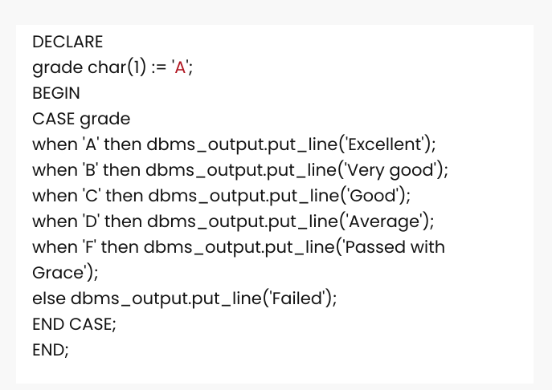

Case in PL/SQL
The PL/SQL CASE statement facilitates you to execute a sequence of satatements based on a selector. A selector can be anything such as variable, function or an expression that the CASE statement checks to a boolean value.
The CASE statement works like the IF statement, only using the keyword WHEN. A CASE statement is evaluated from top to bottom. If it get the condition TRUE, then the corresponding THEN calause is executed and the execution goes to the END CASE clause.
Syntax for the CASE Statement:
CASE [ expression ]
WHEN condition_1 THEN result_1
WHEN condition_2 THEN result_2
...
WHEN condition_n THEN result_n
ELSE result
END
For example :
For example :
Now that you know case in PL/SQL, let's jump to Loops in PL/SQL
Share this page on :